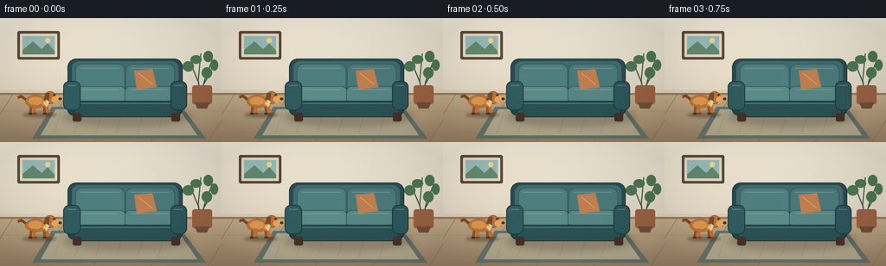
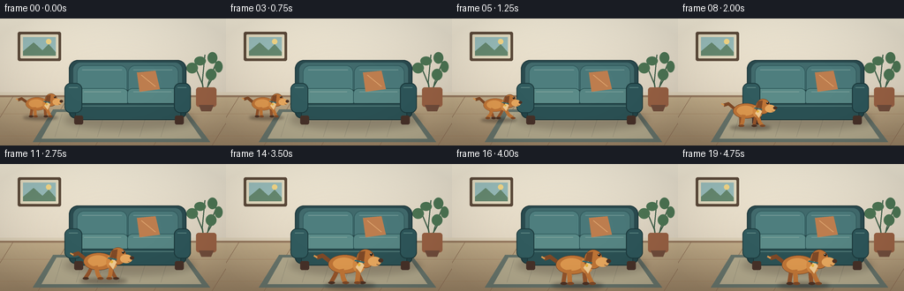
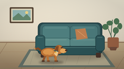

CODING AGENTS AS PIXEL WORLD MODELS
traex/GPT-5.6-Sol · dynamic_spatial_relationship_0001
点击播放 · 原生 RGB 像素
逐轮保存的候选
回放视频、检查图与代码变化。
每份候选均可单独播放。实际图片检查记录在下方工具轨迹中。
候选 01播放与检查图
点击播放 · 原生 RGB 像素


展开代码变化
--- 上一保存版本
+++ 本次保存版本
@@ -0,0 +1,195 @@
+from pathlib import Path
+import math
+import numpy as np
+from PIL import Image, ImageDraw, ImageFilter
+import artifact_io
+
+W,H,N = 256,144,20
+S=4
+rng=np.random.default_rng(7)
+
+def C(box): return tuple(int(round(v*S)) for v in box)
+def pts(p): return [(int(round(x*S)),int(round(y*S))) for x,y in p]
+def rr(d, box, rad, fill, outline=None, width=1):
+ d.rounded_rectangle(C(box), radius=int(rad*S), fill=fill, outline=outline, width=max(1,int(width*S)))
+def ell(d, box, fill, outline=None, width=1):
+ d.ellipse(C(box), fill=fill, outline=outline, width=max(1,int(width*S)))
+def line(d,p,fill,width=1,joint='curve'): d.line(pts(p),fill=fill,width=max(1,int(width*S)),joint=joint)
+def poly(d,p,fill): d.polygon(pts(p),fill=fill)
+
+def background():
+ # Quiet warm living room with subtle illumination from the left.
+ yy,xx=np.mgrid[0:H*S,0:W*S]
+ wall=np.zeros((H*S,W*S,3),dtype=np.float32)
+ t=yy/(86*S)
+ leftglow=np.exp(-((xx-35*S)/(95*S))**2)
+ wall[...,0]=238-19*np.clip(t,0,1)+7*leftglow
+ wall[...,1]=231-22*np.clip(t,0,1)+6*leftglow
+ wall[...,2]=213-22*np.clip(t,0,1)+4*leftglow
+ floor_t=np.clip((yy-86*S)/(58*S),0,1)
+ for c,(a,b) in enumerate([(192,151),(172,128),(137,99)]):
+ wall[...,c]=np.where(yy>=86*S,a+(b-a)*floor_t,wall[...,c])
+ noise=rng.normal(0,0.7,(H*S,W*S,1))
+ wall=np.clip(wall+noise,0,255).astype(np.uint8)
+ im=Image.fromarray(wall,'RGB')
+ d=ImageDraw.Draw(im)
+ # framed landscape
+ rr(d,(20,15,69,48),2,(91,73,57),None)
+ rr(d,(23,18,66,45),1,(228,220,193),None)
+ d.rectangle(C((26,21,63,42)),fill=(152,188,186))
+ poly(d,[(26,37),(38,27),(48,36),(55,29),(63,38),(63,42),(26,42)],(102,137,112))
+ ell(d,(52,23,58,29),(244,215,135))
+ # baseboard and floor seams
+ d.rectangle(C((0,83.5,256,88)),fill=(217,205,181))
+ d.rectangle(C((0,87,256,89)),fill=(148,120,94))
+ for x in (-20,43,108,174,240):
+ line(d,[(x,144),(x+35,88)],(135,105,80),.55)
+ for y in (108,133): line(d,[(0,y),(256,y)],(157,120,89),.45)
+ # rug behind dog: perspective trapezoid, soft border
+ poly(d,[(60,103),(210,103),(238,140),(37,140)],(101,114,105))
+ poly(d,[(64,106),(207,106),(228,136),(47,136)],(176,167,139))
+ # quiet geometric rug pattern
+ for x in range(70,211,24): line(d,[(x,108),(x-8,134)],(151,145,123),.65)
+ return im
+
+def draw_plant(im):
+ d=ImageDraw.Draw(im)
+ # plant behind sofa on far right
+ for end,ctrl in [((232,41),(229,72)),((245,49),(236,73)),((220,52),(229,74)),((242,65),(234,79))]:
+ line(d,[(232,91),ctrl,end],(62,94,72),1.4)
+ for b in [(220,43,233,53),(235,38,246,51),(243,48,252,61),(211,50,224,62),(233,57,245,70)]:
+ ell(d,b,(76,116,83))
+ rr(d,(222,78,245,100),3,(151,96,67))
+ poly(d,[(225,98),(242,98),(239,105),(228,105)],(112,76,59))
+
+def draw_sofa(im):
+ # Layered upholstery/shadows make the immobile reference object very legible.
+ shadow=Image.new('RGBA',im.size,(0,0,0,0)); sd=ImageDraw.Draw(shadow)
+ ell(sd,(72,103,221,126),(45,32,27,65))
+ shadow=shadow.filter(ImageFilter.GaussianBlur(4*S)); im.paste(shadow,(0,0),shadow)
+ d=ImageDraw.Draw(im)
+ # rear silhouette and arms
+ rr(d,(78,47,211,103),10,(42,75,79), (31,56,60),1)
+ rr(d,(83,50,206,90),8,(65,106,108))
+ # back cushions
+ rr(d,(87,53,144,87),8,(78,126,126),(47,88,91),.8)
+ rr(d,(145,53,202,87),8,(74,120,121),(47,88,91),.8)
+ # cushion highlights and seams
+ line(d,[(93,58),(138,58)],(112,151,148),1)
+ line(d,[(151,58),(195,58)],(106,147,144),1)
+ # seat base
+ rr(d,(78,81,211,113),7,(35,69,73),(27,52,56),1)
+ rr(d,(88,79,145,99),6,(91,139,136),(45,87,88),.8)
+ rr(d,(144,79,202,99),6,(86,133,131),(45,87,88),.8)
+ line(d,[(95,83),(137,83)],(129,164,157),.9)
+ line(d,[(151,83),(194,83)],(123,160,154),.9)
+ # front apron and piping
+ rr(d,(85,96,205,115),5,(43,81,84),(27,55,58),1)
+ line(d,[(91,99),(199,99)],(83,123,121),1)
+ # arms in front
+ rr(d,(73,73,93,107),7,(49,91,94),(29,59,62),1)
+ rr(d,(197,73,216,107),7,(45,85,89),(27,56,59),1)
+ line(d,[(78,78),(88,78)],(91,131,128),1)
+ line(d,[(201,78),(211,78)],(85,127,125),1)
+ # feet
+ rr(d,(84,110,94,120),2,(70,49,40)); rr(d,(198,110,208,120),2,(70,49,40))
+ # throw pillow
+ poly(d,[(155,61),(176,59),(181,80),(158,83)],(189,125,78))
+ line(d,[(160,64),(176,77)],(222,164,110),.75)
+
+def mappt(x,y,cx,ground,sc,bob=0): return (cx+x*sc,ground+(y+bob)*sc)
+
+def draw_dog(im,cx,ground,sc,phase,settled=False):
+ # shadow anchors the dog on the floor and strengthens depth/front relation.
+ sh=Image.new('RGBA',im.size,(0,0,0,0)); sd=ImageDraw.Draw(sh)
+ ell(sd,(cx-24*sc,ground-3*sc,cx+30*sc,ground+4*sc),(41,28,23,95))
+ sh=sh.filter(ImageFilter.GaussianBlur(max(2,int(2.2*S*sc)))); im.paste(sh,(0,0),sh)
+ d=ImageDraw.Draw(im)
+ bob = 0 if settled else -1.15*abs(math.sin(phase))
+ golden=(190,116,54); light=(220,151,78); dark=(126,73,39); deep=(76,49,35)
+ far=(148,84,43)
+ def P(x,y): return mappt(x,y,cx,ground,sc,bob)
+ # tail behind body, lively but not distracting
+ wag=(2.2*math.sin(phase*1.3)) if not settled else math.sin(phase)*1.2
+ line(d,[P(-17,-23),P(-26,-29-wag),P(-32,-27-wag)],dark,4.5*sc)
+ line(d,[P(-31.5,-27-wag),P(-35,-29-wag)],light,2.0*sc)
+ # Run cycle; settle into four planted legs for final frames.
+ if settled:
+ offsets=[(-12,-1),(-5,1),(11,0),(18,1)]
+ else:
+ q=math.sin(phase); r=math.sin(phase+math.pi)
+ offsets=[(-12+7*q,-2),(-7+7*r,0),(10+8*r,-1),(16+8*q,1)]
+ # far legs
+ for idx in (0,2):
+ hipx=-10 if idx==0 else 10; fx,fy=offsets[idx]
+ line(d,[P(hipx,-16),P((hipx+fx)/2,-8),P(fx,-2)],far,4.5*sc)
+ ell(d,(P(fx-3,-3)[0],P(fx-3,-3)[1],P(fx+4,0)[0],P(fx+4,0)[1]),deep)
+ # body/chest
+ ell(d,(P(-20,-31)[0],P(-20,-31)[1],P(15,-11)[0],P(15,-11)[1]),golden,(111,67,40),max(1,int(sc*S*.6))/S)
+ ell(d,(P(-15,-28)[0],P(-15,-28)[1],P(8,-15)[0],P(8,-15)[1]),light)
+ ell(d,(P(6,-29)[0],P(6,-29)[1],P(19,-12)[0],P(19,-12)[1]),(211,137,66))
+ # near legs
+ for idx in (1,3):
+ hipx=-6 if idx==1 else 12; fx,fy=offsets[idx]
+ knee=((hipx+fx)/2,-8 + (2 if not settled else 0))
+ line(d,[P(hipx,-16),P(*knee),P(fx,-2)],golden,5.0*sc)
+ ell(d,(P(fx-3,-3)[0],P(fx-3,-3)[1],P(fx+4,0)[0],P(fx+4,0)[1]),dark)
+ # neck/head and muzzle, facing right
+ ell(d,(P(10,-37)[0],P(10,-37)[1],P(29,-17)[0],P(29,-17)[1]),golden,(108,65,38),.65)
+ # floppy ear swinging in run
+ earswing=2*abs(math.sin(phase)) if not settled else .5
+ poly(d,[P(13,-34),P(19,-35),P(17,-19+earswing),P(10,-23)],dark)
+ ell(d,(P(22,-29)[0],P(22,-29)[1],P(36,-19)[0],P(36,-19)[1]),(230,167,94))
+ ell(d,(P(33,-27)[0],P(33,-27)[1],P(38,-23)[0],P(38,-23)[1]),deep)
+ # chest flash
+ poly(d,[P(14,-25),P(18,-20),P(14,-12),P(9,-18)],(239,202,145))
+ # eye, catchlight, smile, collar
+ ell(d,(P(24,-33)[0],P(24,-33)[1],P(27,-30)[0],P(27,-30)[1]),(40,31,25))
+ ell(d,(P(24.7,-32.6)[0],P(24.7,-32.6)[1],P(25.5,-31.8)[0],P(25.5,-31.8)[1]),(255,244,218))
+ line(d,[P(8,-25),P(18,-23)],(47,105,112),1.8*sc)
+ ell(d,(P(11,-22)[0],P(11,-22)[1],P(14,-19)[0],P(14,-19)[1]),(230,179,59))
+ line(d,[P(31,-21),P(34,-20)],deep,.7*sc)
+
+def trajectory(i):
+ # Hold the initial left relation, execute the run, then hold clearly in front.
+ if i<=3:
+ return 43.5,112.0,0.73,True
+ if i>=15:
+ return 139.0,137.0,1.08,True
+ u=(i-3)/12
+ e=u*u*(3-2*u)
+ x=43.5+(139-43.5)*e
+ y=112+(137-112)*e + 1.8*math.sin(math.pi*u)
+ sc=.73+(1.08-.73)*e
+ return x,y,sc,False
+
+def make_frame(i):
+ im=background()
+ draw_plant(im)
+ draw_sofa(im)
+ cx,g,sc,hold=trajectory(i)
+ # tiny breathing/tail motion even while holding, but no positional ambiguity
+ if i<=3:
+ phase=i*.7
+ settled=True
+ elif i>=15:
+ phase=(i-15)*.55
+ settled=True
+ else:
+ phase=(i-4)*1.65
+ settled=False
+ draw_dog(im,cx,g,sc,phase,settled)
+ # Soft cinematic vignette.
+ arr=np.asarray(im).astype(np.float32)
+ yy,xx=np.mgrid[0:H*S,0:W*S]
+ dx=(xx-W*S/2)/(W*S/2); dy=(yy-H*S/2)/(H*S/2)
+ vig=np.clip(1-.075*np.maximum(0,dx*dx+dy*dy-.18),.9,1)[...,None]
+ arr=np.clip(arr*vig,0,255).astype(np.uint8)
+ im=Image.fromarray(arr).resize((W,H),Image.Resampling.LANCZOS)
+ return np.asarray(im,dtype=np.uint8)
+
+def main():
+ frames=np.stack([make_frame(i) for i in range(N)])
+ artifact_io.save(frames,Path(__file__).resolve().parent)
+
+if __name__=='__main__': main()
可观测工具轨迹
实际执行的命令与返回图片。
命令 1exit 0
/bin/bash -lc "cat prompt.txt && printf '\\n---RULES---\\n' && cat GENERATION_RULES.md && printf '\\n---SPEC---\\n' && cat task_spec.json"
命令 2exit 0
/bin/bash -lc "find . -maxdepth 2 -type f -printf '%p %s bytes\\n' | sort"
命令 3exit 0
/bin/bash -lc "sed -n '1,240p' artifact_io.py"
命令 4exit 0
/bin/bash -lc "cat > generate.py <<'PY'
from pathlib import Path
import math
import numpy as np
from PIL import Image, ImageDraw, ImageFilter
import artifact_io
W,H,N = 256,144,20
S=4
rng=np.random.default_rng(7)
def C(box): return tuple(int(round(v*S)) for v in box)
def pts(p): return [(int(round(x*S)),int(round(y*S))) for x,y in p]
def rr(d, box, rad, fill, outline=None, width=1):
d.rounded_rectangle(C(box), radius=int(rad*S), fill=fill, outline=outline, width=max(1,int(width*S)))
def ell(d, box, fill, outline=None, width=1):
d.ellipse(C(box), fill=fill, outline=outline, width=max(1,int(width*S)))
def line(d,p,fill,width=1,joint='curve'): d.line(pts(p),fill=fill,width=max(1,int(width*S)),joint=joint)
def poly(d,p,fill): d.polygon(pts(p),fill=fill)
def background():
# Quiet warm living room with subtle illumination from the left.
yy,xx=np.mgrid[0:H*S,0:W*S]
wall=np.zeros((H*S,W*S,3),dtype=np.float32)
t=yy/(86*S)
leftglow=np.exp(-((xx-35*S)/(95*S))**2)
wall[...,0]=238-19*np.clip(t,0,1)+7*leftglow
wall[...,1]=231-22*np.clip(t,0,1)+6*leftglow
wall[...,2]=213-22*np.clip(t,0,1)+4*leftglow
floor_t=np.clip((yy-86*S)/(58*S),0,1)
for c,(a,b) in enumerate([(192,151),(172,128),(137,99)]):
wall[...,c]=np.where(yy>=86*S,a+(b-a)*floor_t,wall[...,c])
noise=rng.normal(0,0.7,(H*S,W*S,1))
wall=np.clip(wall+noise,0,255).astype(np.uint8)
im=Image.fromarray(wall,'RGB')
d=ImageDraw.Draw(im)
# framed landscape
rr(d,(20,15,69,48),2,(91,73,57),None)
rr(d,(23,18,66,45),1,(228,220,193),None)
d.rectangle(C((26,21,63,42)),fill=(152,188,186))
poly(d,[(26,37),(38,27),(48,36),(55,29),(63,38),(63,42),(26,42)],(102,137,112))
ell(d,(52,23,58,29),(244,215,135))
# baseboard and floor seams
d.rectangle(C((0,83.5,256,88)),fill=(217,205,181))
d.rectangle(C((0,87,256,89)),fill=(148,120,94))
for x in (-20,43,108,174,240):
line(d,[(x,144),(x+35,88)],(135,105,80),.55)
for y in (108,133): line(d,[(0,y),(256,y)],(157,120,89),.45)
# rug behind dog: perspective trapezoid, soft border
poly(d,[(60,103),(210,103),(238,140),(37,140)],(101,114,105))
poly(d,[(64,106),(207,106),(228,136),(47,136)],(176,167,139))
# quiet geometric rug pattern
for x in range(70,211,24): line(d,[(x,108),(x-8,134)],(151,145,123),.65)
return im
def draw_plant(im):
d=ImageDraw.Draw(im)
# plant behind sofa on far right
for end,ctrl in [((232,41),(229,72)),((245,49),(236,73)),((220,52),(229,74)),((242,65),(234,79))]:
line(d,[(232,91),ctrl,end],(62,94,72),1.4)
for b in [(220,43,233,53),(235,38,246,51),(243,48,252,61),(211,50,224,62),(233,57,245,70)]:
ell(d,b,(76,116,83))
rr(d,(222,78,245,100),3,(151,96,67))
poly(d,[(225,98),(242,98),(239,105),(228,105)],(112,76,59))
def draw_sofa(im):
# Layered upholstery/shadows make the immobile reference object very legible.
shadow=Image.new('RGBA',im.size,(0,0,0,0)); sd=ImageDraw.Draw(shadow)
ell(sd,(72,103,221,126),(45,32,27,65))
shadow=shadow.filter(ImageFilter.GaussianBlur(4*S)); im.paste(shadow,(0,0),shadow)
d=ImageDraw.Draw(im)
# rear silhouette and arms
rr(d,(78,47,211,103),10,(42,75,79), (31,56,60),1)
rr(d,(83,50,206,90),8,(65,106,108))
# back cushions
rr(d,(87,53,144,87),8,(78,126,126),(47,88,91),.8)
rr(d,(145,53,202,87),8,(74,120,121),(47,88,91),.8)
# cushion highlights and seams
line(d,[(93,58),(138,58)],(112,151,148),1)
line(d,[(151,58),(195,58)],(106,147,144),1)
# seat base
rr(d,(78,81,211,113),7,(35,69,73),(27,52,56),1)
rr(d,(88,79,145,99),6,(91,139,136),(45,87,88),.8)
rr(d,(144,79,202,99),6,(86,133,131),(45,87,88),.8)
line(d,[(95,83),(137,83)],(129,164,157),.9)
line(d,[(151,83),(194,83)],(123,160,154),.9)
# front apron and piping
rr(d,(85,96,205,115),5,(43,81,84),(27,55,58),1)
line(d,[(91,99),(199,99)],(83,123,121),1)
# arms in front
rr(d,(73,73,93,107),7,(49,91,94),(29,59,62),1)
rr(d,(197,73,216,107),7,(45,85,89),(27,56,59),1)
line(d,[(78,78),(88,78)],(91,131,128),1)
line(d,[(201,78),(211,78)],(85,127,125),1)
# feet
rr(d,(84,110,94,120),2,(70,49,40)); rr(d,(198,110,208,120),2,(70,49,40))
# throw pillow
poly(d,[(155,61),(176,59),(181,80),(158,83)],(189,125,78))
line(d,[(160,64),(176,77)],(222,164,110),.75)
def mappt(x,y,cx,ground,sc,bob=0): return (cx+x*sc,ground+(y+bob)*sc)
def draw_dog(im,cx,ground,sc,phase,settled=False):
# shadow anchors the dog on the floor and strengthens depth/front relation.
sh=Image.new('RGBA',im.size,(0,0,0,0)); sd=ImageDraw.Draw(sh)
ell(sd,(cx-24*sc,ground-3*sc,cx+30*sc,ground+4*sc),(41,28,23,95))
sh=sh.filter(ImageFilter.GaussianBlur(max(2,int(2.2*S*sc)))); im.paste(sh,(0,0),sh)
d=ImageDraw.Draw(im)
bob = 0 if settled else -1.15*abs(math.sin(phase))
golden=(190,116,54); light=(220,151,78); dark=(126,73,39); deep=(76,49,35)
far=(148,84,43)
def P(x,y): return mappt(x,y,cx,ground,sc,bob)
# tail behind body, lively but not distracting
wag=(2.2*math.sin(phase*1.3)) if not settled else math.sin(phase)*1.2
line(d,[P(-17,-23),P(-26,-29-wag),P(-32,-27-wag)],dark,4.5*sc)
line(d,[P(-31.5,-27-wag),P(-35,-29-wag)],light,2.0*sc)
# Run cycle; settle into four planted legs for final frames.
if settled:
offsets=[(-12,-1),(-5,1),(11,0),(18,1)]
else:
q=math.sin(phase); r=math.sin(phase+math.pi)
offsets=[(-12+7*q,-2),(-7+7*r,0),(10+8*r,-1),(16+8*q,1)]
# far legs
for idx in (0,2):
hipx=-10 if idx==0 else 10; fx,fy=offsets[idx]
line(d,[P(hipx,-16),P((hipx+fx)/2,-8),P(fx,-2)],far,4.5*sc)
ell(d,(P(fx-3,-3)[0],P(fx-3,-3)[1],P(fx+4,0)[0],P(fx+4,0)[1]),deep)
# body/chest
ell(d,(P(-20,-31)[0],P(-20,-31)[1],P(15,-11)[0],P(15,-11)[1]),golden,(111,67,40),max(1,int(sc*S*.6))/S)
ell(d,(P(-15,-28)[0],P(-15,-28)[1],P(8,-15)[0],P(8,-15)[1]),light)
ell(d,(P(6,-29)[0],P(6,-29)[1],P(19,-12)[0],P(19,-12)[1]),(211,137,66))
# near legs
for idx in (1,3):
hipx=-6 if idx==1 else 12; fx,fy=offsets[idx]
knee=((hipx+fx)/2,-8 + (2 if not settled else 0))
line(d,[P(hipx,-16),P(*knee),P(fx,-2)],golden,5.0*sc)
ell(d,(P(fx-3,-3)[0],P(fx-3,-3)[1],P(fx+4,0)[0],P(fx+4,0)[1]),dark)
# neck/head and muzzle, facing right
ell(d,(P(10,-37)[0],P(10,-37)[1],P(29,-17)[0],P(29,-17)[1]),golden,(108,65,38),.65)
# floppy ear swinging in run
earswing=2*abs(math.sin(phase)) if not settled else .5
poly(d,[P(13,-34),P(19,-35),P(17,-19+earswing),P(10,-23)],dark)
ell(d,(P(22,-29)[0],P(22,-29)[1],P(36,-19)[0],P(36,-19)[1]),(230,167,94))
ell(d,(P(33,-27)[0],P(33,-27)[1],P(38,-23)[0],P(38,-23)[1]),deep)
# chest flash
poly(d,[P(14,-25),P(18,-20),P(14,-12),P(9,-18)],(239,202,145))
# eye, catchlight, smile, collar
ell(d,(P(24,-33)[0],P(24,-33)[1],P(27,-30)[0],P(27,-30)[1]),(40,31,25))
ell(d,(P(24.7,-32.6)[0],P(24.7,-32.6)[1],P(25.5,-31.8)[0],P(25.5,-31.8)[1]),(255,244,218))
line(d,[P(8,-25),P(18,-23)],(47,105,112),1.8*sc)
ell(d,(P(11,-22)[0],P(11,-22)[1],P(14,-19)[0],P(14,-19)[1]),(230,179,59))
line(d,[P(31,-21),P(34,-20)],deep,.7*sc)
def trajectory(i):
# Hold the initial left relation, execute the run, then hold clearly in front.
if i<=3:
return 43.5,112.0,0.73,True
if i>=15:
return 139.0,137.0,1.08,True
u=(i-3)/12
e=u*u*(3-2*u)
x=43.5+(139-43.5)*e
y=112+(137-112)*e + 1.8*math.sin(math.pi*u)
sc=.73+(1.08-.73)*e
return x,y,sc,False
def make_frame(i):
im=background()
draw_plant(im)
draw_sofa(im)
cx,g,sc,hold=trajectory(i)
# tiny breathing/tail motion even while holding, but no positional ambiguity
if i<=3:
phase=i*.7
settled=True
elif i>=15:
phase=(i-15)*.55
settled=True
else:
phase=(i-4)*1.65
settled=False
draw_dog(im,cx,g,sc,phase,settled)
# Soft cinematic vignette.
arr=np.asarray(im).astype(np.float32)
yy,xx=np.mgrid[0:H*S,0:W*S]
dx=(xx-W*S/2)/(W*S/2); dy=(yy-H*S/2)/(H*S/2)
vig=np.clip(1-.075*np.maximum(0,dx*dx+dy*dy-.18),.9,1)[...,None]
arr=np.clip(arr*vig,0,255).astype(np.uint8)
im=Image.fromarray(arr).resize((W,H),Image.Resampling.LANCZOS)
return np.asarray(im,dtype=np.uint8)
def main():
frames=np.stack([make_frame(i) for i in range(N)])
artifact_io.save(frames,Path(__file__).resolve().parent)
if __name__=='__main__': main()
PY
python generate.py
python - <<'PY'
import numpy as np
from PIL import Image
p=np.load('pixels.npz')['pixels']
print('pixels',p.shape,p.dtype,'frames',len(list(__import__('pathlib').Path('frames').glob('*.png'))))
PY"视觉工具实际返回图片 1

视觉工具实际返回图片 2

保存候选 1 份；完成命令 4 次；可验证图片返回 2 张。原始 API 响应与完整日志保留在本地。